model
Project outline
We invited over 5,000 individuals on an orthopaedic waitlist to participate in a survey with the aim of characterising patients on the waitlist and determine their specific needs in order to develop an online intervention. Patients were asked questions relating to their medical history and current health status, demographics, psychological wellbeing and pain intensity. Just over 1,000 patients responded to the survey.
Aim (of this manuscript): to identify individuals on an orthopaedic waitlist who have elevated cardiovascular risk
List of all variables collected:
• Age
• Gender
• Postcode
• Joint affected
• Time spent on waitlist
• Education level
• Employment status
• Indigenous status (Aus or NZ)
• Preferred language
• Country of birth
• Osteoarthritis status (yes/no)
• Medical history: presence of diabetes, high cholesterol, high blood pressure, asthma, injury, family medical history
• Lifestyle:
o smoking status and amount
o past smoking status and amount
o alcohol consumed (drinks per day)
o Sleep (hours per night)
o Physical activity (from the Active Australia Survey) – MET mins/week and whether they meet the physical activity guidelines
• Psychological wellbeing:
o Depression score (PHQ-9)
o Psychological distress (K-10)
o Mental wellbeing score (sWEMWBS)
o Loneliness score (UCLAS)
o Social connectedness score (SCS)
• Quality of life (from EQ-5D)
• Pain intensity:
o Numerical rating scale (1-10 score)
o 4-item pain intensity score
Independent variables to be used in modeling:
Age: `age`Gender: `gender`Wait time:OA statusEducationIndigenous statusSleepAlcohol amountDepression scorePain score
Data cleaning and recoding
Merging categories 4 and 5 for cvdrisk_index
| cvdrisk_index_merged | n | prop |
|---|---|---|
| 0 | 262 | 0.281 |
| 1 | 293 | 0.314 |
| 2 | 207 | 0.222 |
| 3 | 123 | 0.132 |
| 4 | 49 | 0.052 |
- suggestions:
age: would be better to introduce ranges (15-25, 25-35, etc.) The “duration” of the range can be set
Recoding age into 3 category grous (for confirmation):
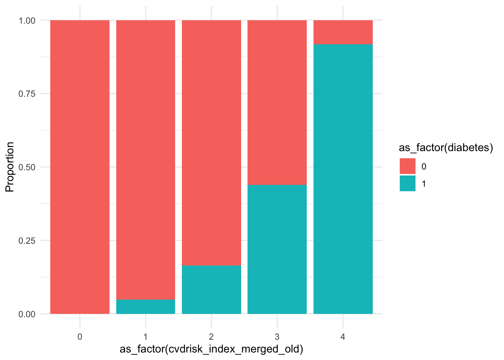
gender
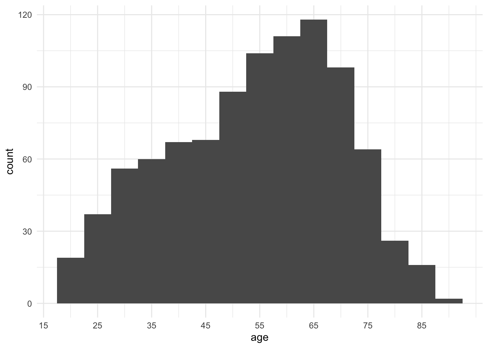
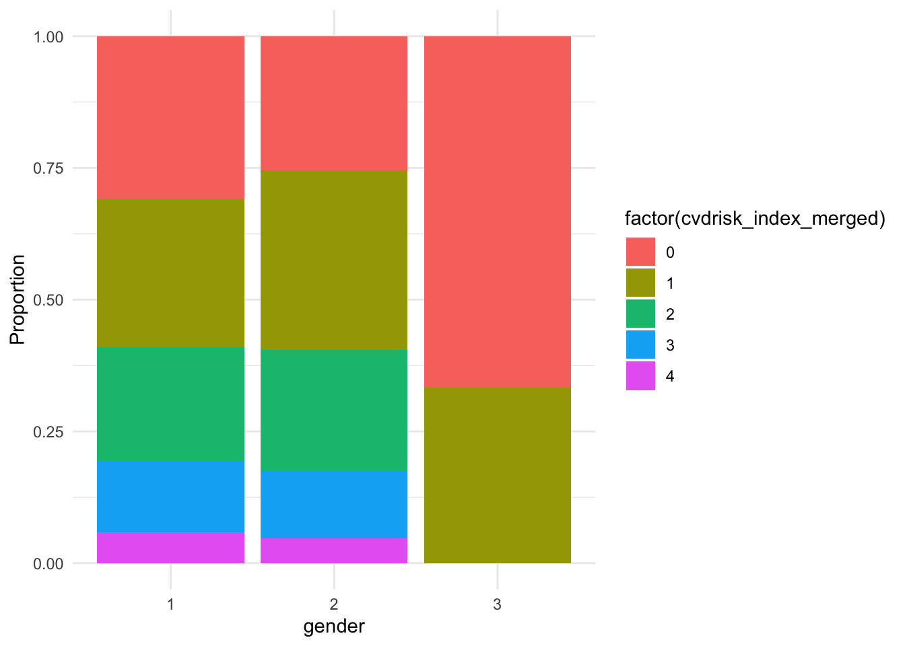
wait.time.days
I see a few spikes there…. can this be ranges, e.g. short-wait, mid, long with in-betweens?
Suggestion:
short wait
mid wait
long wait ?
Waiting time in days converted into years
Min. 1st Qu. Median Mean 3rd Qu. Max.
50 199 581 551 790 1622 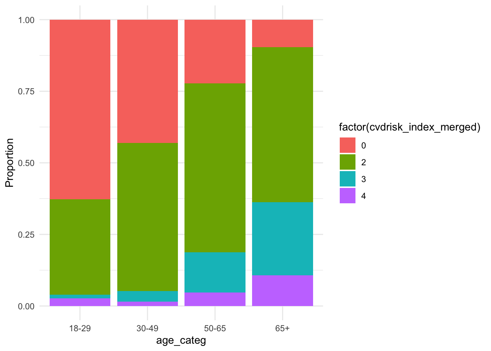
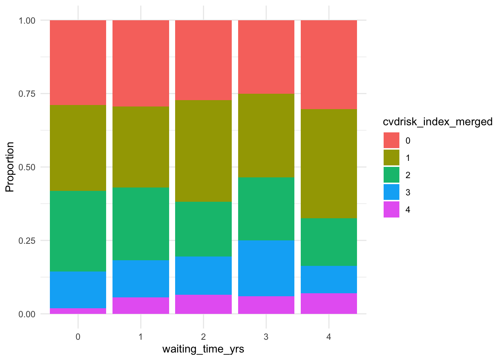
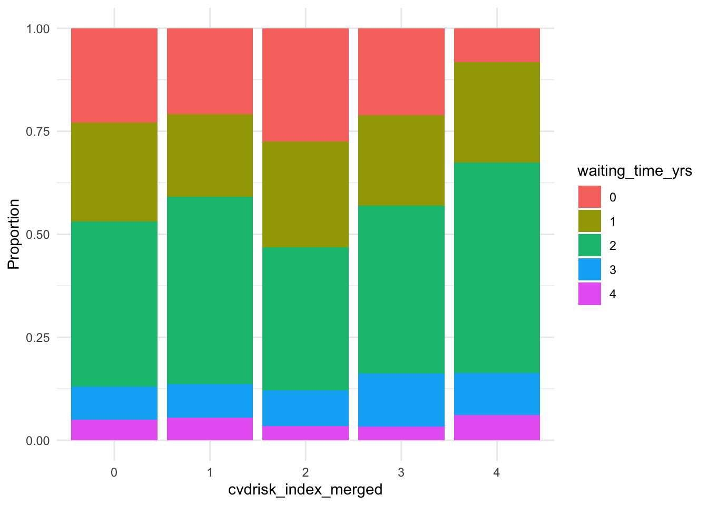
OA status = OA
| OA | n |
|---|---|
| No | 403 |
| Yes | 531 |
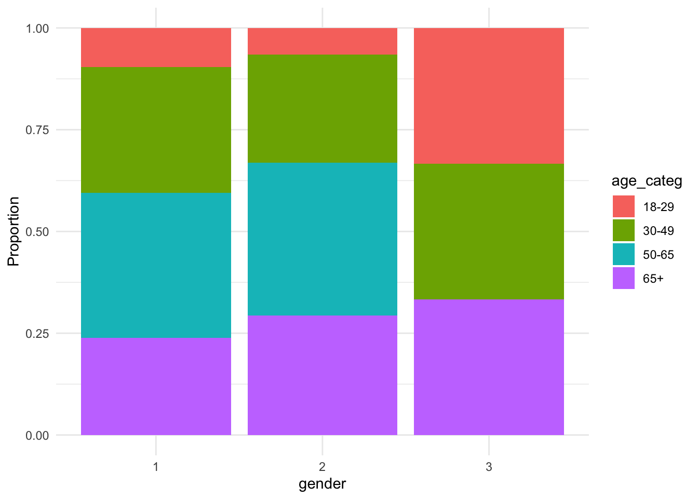
Education= edu_level ?
1, Year 11 or lower |
2, Year 12 or equivalent |
3, TAFE or trade certificate |
4, Certificate IV |
5, Diploma or Advanced Diploma |
6, Bachelor Degree (not including honours) |
7, Honours, Graduate Certificate, Graduate Diploma |
8, Postgraduate Diploma, Postgraduate degree or Masters Degree |
9, Doctorate
| edu_level | n |
|---|---|
| 1 | 335 |
| 2 | 150 |
| 3 | 98 |
| 4 | 59 |
| 5 | 106 |
| 6 | 90 |
| 7 | 23 |
| 8 | 60 |
| 9 | 9 |
| NA | 4 |
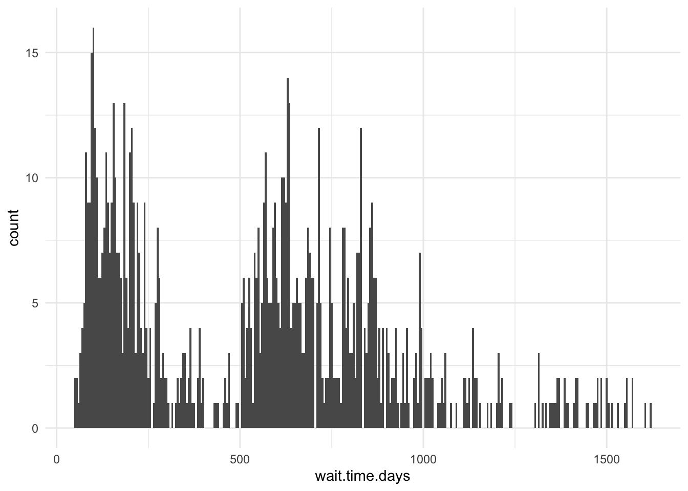
# A tibble: 5 × 2
edu_level_categ n
<chr> <int>
1 yr11_yr12 485
2 cert_diploma 263
3 postgrad 92
4 bachelor 90
5 not_provided 4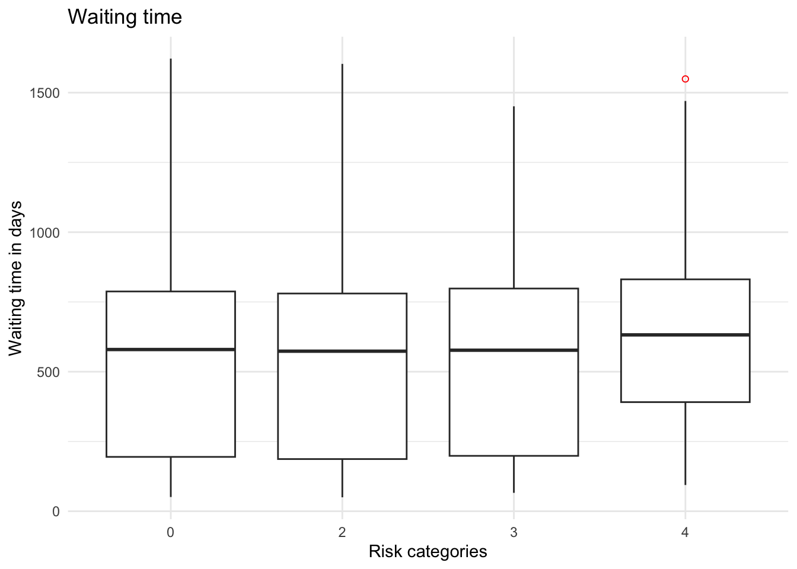
Indigenous status: aus_indigenous nz_indigenous
aus_indigenous: 0, Neither | 1, Aboriginal | 2, Torres Strait Islander | 3, Both | 4, Prefer not to say
suggested recoding: 0 (no) 1(yes):1,2,3 4: merge 4 and NA
Also, given a small number of 0 (no) and high 4 - merge 0 into 4
nz_indigenous: Are you Maori? See high NAs
Suggested recoding 0 (no?) 1 (yes?) 4 NA
Same suggestion as above: merge 0 to 4
| aus_indigenous | n |
|---|---|
| 0 | 512 |
| 1 | 15 |
| 2 | 1 |
| 4 | 7 |
| NA | 399 |
| nz_indigenous | n |
|---|---|
| 0 | 24 |
| 1 | 12 |
| NA | 898 |
| aus_indigenous_recoded | n |
|---|---|
| 0 | 512 |
| 1 | 16 |
| 4 | 406 |
| nz_indigenous_recoded | n |
|---|---|
| 0 | 24 |
| 1 | 12 |
| 4 | 898 |
# A tibble: 3 × 2
indig n
<dbl> <int>
1 0 536
2 1 28
3 4 370Sleep: Sleep > sleep 0, Less than 1 | 1, 1 | 2, 2 | 3, 3 | 4, 4 | 5, 5 | 6, 6 | 7, 7 | 8, 8 | 9, 9 | 10, 10 | 11, 11 | 12, 12 | 13, More than 12
too many
Suggestion (look at the bar chart below to see distinct groupings)
0-3: low sleep 4-6: not enough 7-8: moderate sleep 9-13: enough (=high?) sleep
but - you still have 20 in NAs for sleep. How do you want to treat them?
| sleep | n | prop |
|---|---|---|
| 0 | 1 | 0.001 |
| 1 | 1 | 0.001 |
| 2 | 2 | 0.002 |
| 3 | 19 | 0.020 |
| 4 | 56 | 0.060 |
| 5 | 141 | 0.151 |
| 6 | 242 | 0.259 |
| 7 | 235 | 0.252 |
| 8 | 174 | 0.186 |
| 9 | 28 | 0.030 |
| 10 | 13 | 0.014 |
| 11 | 1 | 0.001 |
| 13 | 1 | 0.001 |
| NA | 20 | 0.021 |
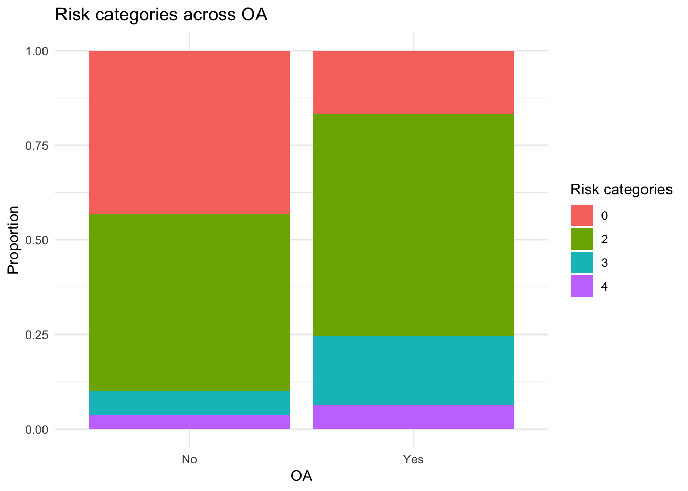
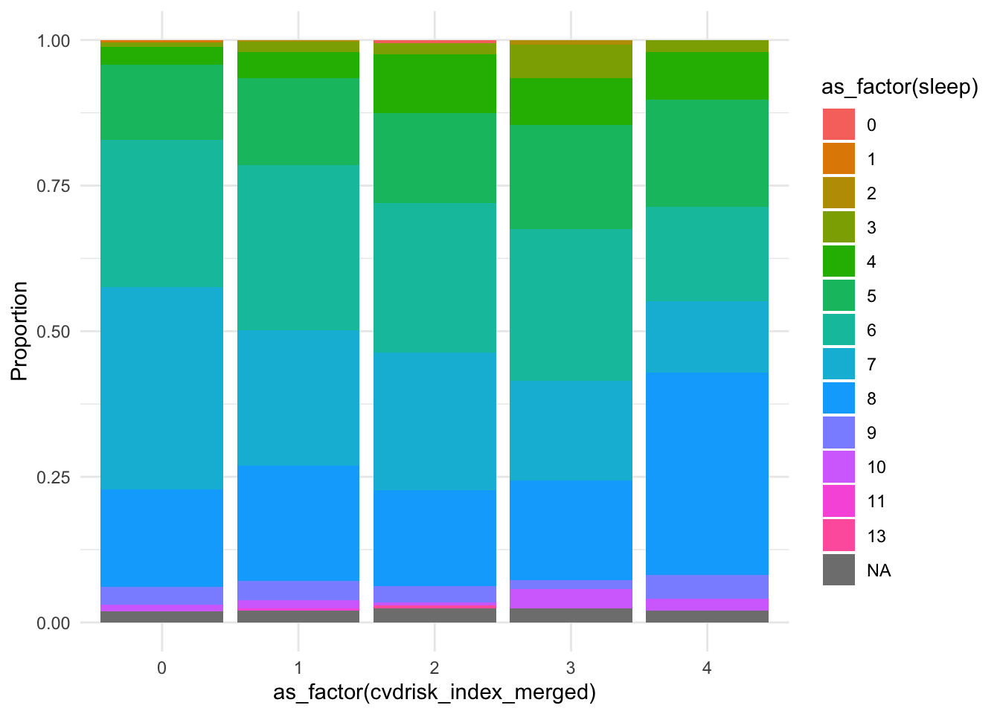
Sleep recorded
Alcohol amount
alcohol: Do you drink alcohol regularly?
alcohol.amount: How many alcoholic drinks do you have on average per day? 0, less than 1 | 1, 1 | 2, 2 | 3, 3 | 4, 4 | 5, 5 | 6, More than 5
| alcohol | n |
|---|---|
| 0 | 736 |
| 1 | 198 |
| alcohol.amount | n | prop |
|---|---|---|
| 0 | 57 | 0.061 |
| 1 | 41 | 0.044 |
| 2 | 46 | 0.049 |
| 3 | 24 | 0.026 |
| 4 | 17 | 0.018 |
| 5 | 3 | 0.003 |
| 6 | 6 | 0.006 |
| NA | 740 | 0.792 |
Depression score: EQ5D_anxdep
Treatment for NAs?
1, I am not anxious or depressed |
2, I am slightly anxious or depressed |
3, I am moderately anxious or depressed |
4, I am severely anxious or depressed |
5, I am extremely anxious or depressed
# A tibble: 6 × 2
EQ5D_anxdep n
<fct> <int>
1 1 306
2 2 247
3 3 247
4 4 94
5 5 37
6 <NA> 3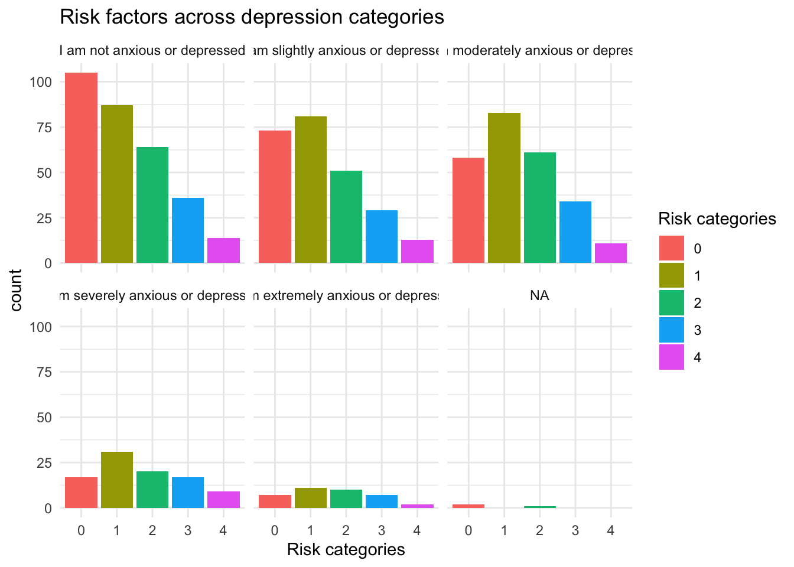
Pain score =
EQ_pain: On a scale of 0 - 10, with 0 being no pain and 10 being the worst pain possible
paincat: 0 = None, <6 = Mild, <8 = Moderate, 8 or above = Severe
# A tibble: 5 × 2
paincat n
<chr> <int>
1 Mild 314
2 Severe 276
3 Moderate 234
4 None 61
5 <NA> 49# A tibble: 5 × 2
paincat n
<chr> <int>
1 Mild 314
2 Severe 276
3 Moderate 234
4 None 61
5 not_provided 49# A tibble: 3 × 2
oa_check n
<dbl> <int>
1 0 588
2 1 343
3 NA 3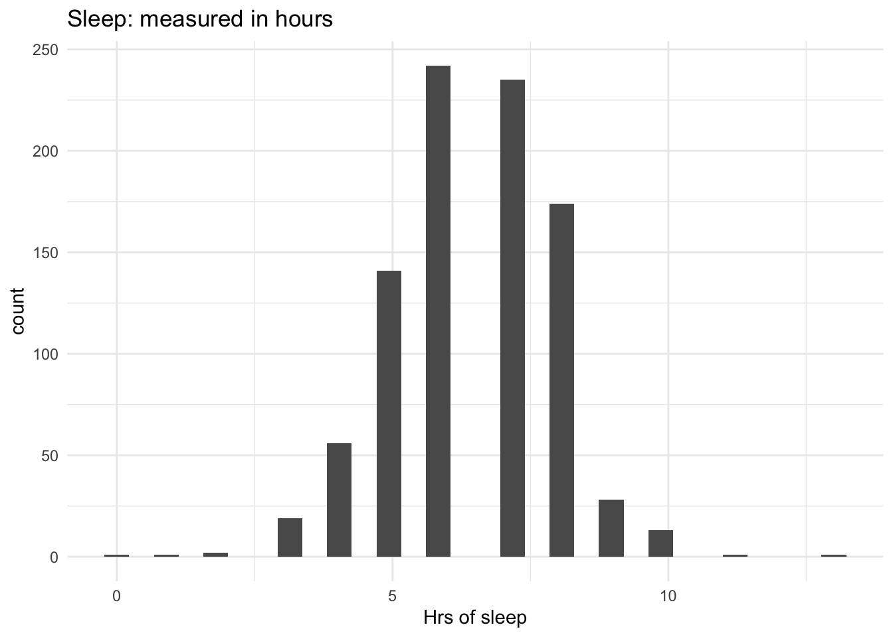
Country:
Model
Model data
cvdrisk_index_merged age_categ gender waiting_time_yrs OA
0:260 15-34:131 1:426 0:208 No :401
1:293 35-54:298 2:502 1:212 Yes:530
2:206 55-69:347 3: 3 2:384
3:123 70+ :155 3: 84
4: 49 4: 43
edu_level_categ indig sleep_categ alcohol EQ5D_anxdep
bachelor : 90 0:535 high_sleep : 43 0:733 1:306
cert_diploma:263 1: 28 low_sleep :220 1:198 2:247
not_provided: 4 4:368 moderate_sleep:650 3:247
postgrad : 92 not provided : 18 4: 94
yr11_yr12 :482 5: 37
paincat
Mild :314
Moderate :234
None : 61
not_provided: 46
Severe :276 Stratification is used to split the data into training and testing subset. Additionally, validation set is used for training with 80% of data allocated.
Penalized logistic regression (multinomial regression with glmnet)
linear predictors to predict multiclass data using the multinomial distribution.
Grid tuning for penalty values
Lowest penalty values vs highest penalty values
# A tibble: 5 × 1
penalty
<dbl>
1 0.0001
2 0.000127
3 0.000161
4 0.000204
5 0.000259# A tibble: 5 × 1
penalty
<dbl>
1 0.0386
2 0.0489
3 0.0621
4 0.0788
5 0.1 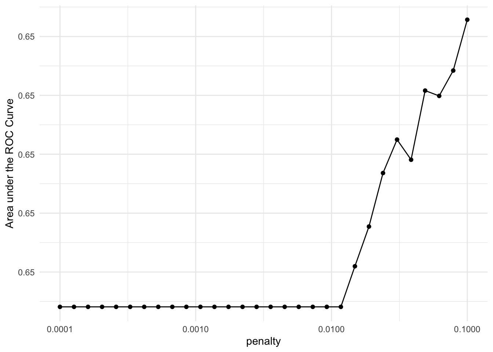
This plots shows us that model performance is generally better at the higher penalty values
not all predictors are important in the model.
a large enough penalty removes all predictors from the model, this brings the effect on the predictive accuracy with no predictors in the model.
“best” value for penalty using ROC_AUC
# A tibble: 15 × 7
penalty .metric .estimator mean n std_err .config
<dbl> <chr> <chr> <dbl> <int> <dbl> <chr>
1 0.0001 roc_auc hand_till 0.622 1 NA Preprocessor1_Model01
2 0.000127 roc_auc hand_till 0.622 1 NA Preprocessor1_Model02
3 0.000161 roc_auc hand_till 0.622 1 NA Preprocessor1_Model03
4 0.000204 roc_auc hand_till 0.622 1 NA Preprocessor1_Model04
5 0.000259 roc_auc hand_till 0.622 1 NA Preprocessor1_Model05
6 0.000329 roc_auc hand_till 0.622 1 NA Preprocessor1_Model06
7 0.0149 roc_auc hand_till 0.622 1 NA Preprocessor1_Model22
8 0.0189 roc_auc hand_till 0.623 1 NA Preprocessor1_Model23
9 0.0240 roc_auc hand_till 0.625 1 NA Preprocessor1_Model24
10 0.0304 roc_auc hand_till 0.626 1 NA Preprocessor1_Model25
11 0.0386 roc_auc hand_till 0.626 1 NA Preprocessor1_Model26
12 0.0489 roc_auc hand_till 0.625 1 NA Preprocessor1_Model27
13 0.0621 roc_auc hand_till 0.624 1 NA Preprocessor1_Model28
14 0.0788 roc_auc hand_till 0.624 1 NA Preprocessor1_Model29
15 0.1 roc_auc hand_till 0.624 1 NA Preprocessor1_Model30# A tibble: 1 × 7
penalty .metric .estimator mean n std_err .config
<dbl> <chr> <chr> <dbl> <int> <dbl> <chr>
1 0.1 roc_auc hand_till 0.624 1 NA Preprocessor1_Model30Validation set

Random Forest
# A tibble: 1 × 3
mtry min_n .config
<int> <int> <chr>
1 5 35 Preprocessor1_Model12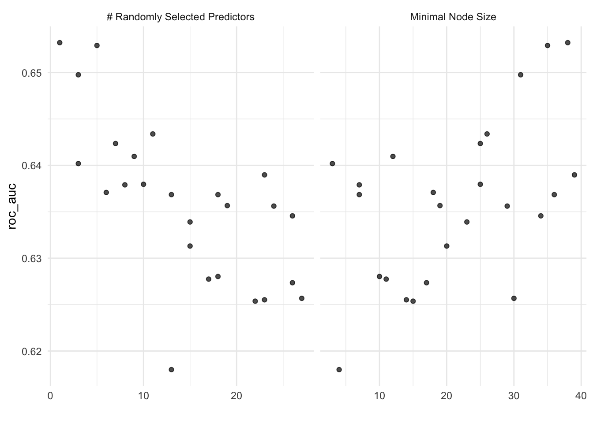
# A tibble: 3,525 × 11
id .pred_0 .pred_1 .pred_2 .pred_3 .pred_4 .row mtry min_n cvdri…¹
<chr> <dbl> <dbl> <dbl> <dbl> <dbl> <int> <int> <int> <fct>
1 validation 0.465 0.395 0.0820 0.0464 0.0119 4 13 7 0
2 validation 0.589 0.171 0.215 0.0251 0.0005 7 13 7 0
3 validation 0.736 0.234 0.0167 0.0109 0.00225 8 13 7 0
4 validation 0.256 0.468 0.223 0.0434 0.0101 11 13 7 0
5 validation 0.192 0.335 0.300 0.159 0.0131 17 13 7 0
6 validation 0.467 0.285 0.121 0.0779 0.0488 18 13 7 0
7 validation 0.137 0.493 0.160 0.172 0.0378 32 13 7 0
8 validation 0.115 0.211 0.238 0.207 0.229 35 13 7 0
9 validation 0.0239 0.534 0.274 0.137 0.0313 37 13 7 0
10 validation 0.670 0.294 0.0247 0.0113 0.000964 43 13 7 0
# … with 3,515 more rows, 1 more variable: .config <chr>, and abbreviated
# variable name ¹cvdrisk_index_merged# A tibble: 705 × 5
.level .threshold specificity sensitivity model
<chr> <dbl> <dbl> <dbl> <chr>
1 0 -Inf 0 1 Random Forest
2 0 0.0621 0 1 Random Forest
3 0 0.0717 0.00962 1 Random Forest
4 0 0.0748 0.00962 0.973 Random Forest
5 0 0.0783 0.0192 0.973 Random Forest
6 0 0.0785 0.0192 0.946 Random Forest
7 0 0.0795 0.0288 0.946 Random Forest
8 0 0.0799 0.0385 0.946 Random Forest
9 0 0.0813 0.0481 0.946 Random Forest
10 0 0.0823 0.0577 0.946 Random Forest
# … with 695 more rows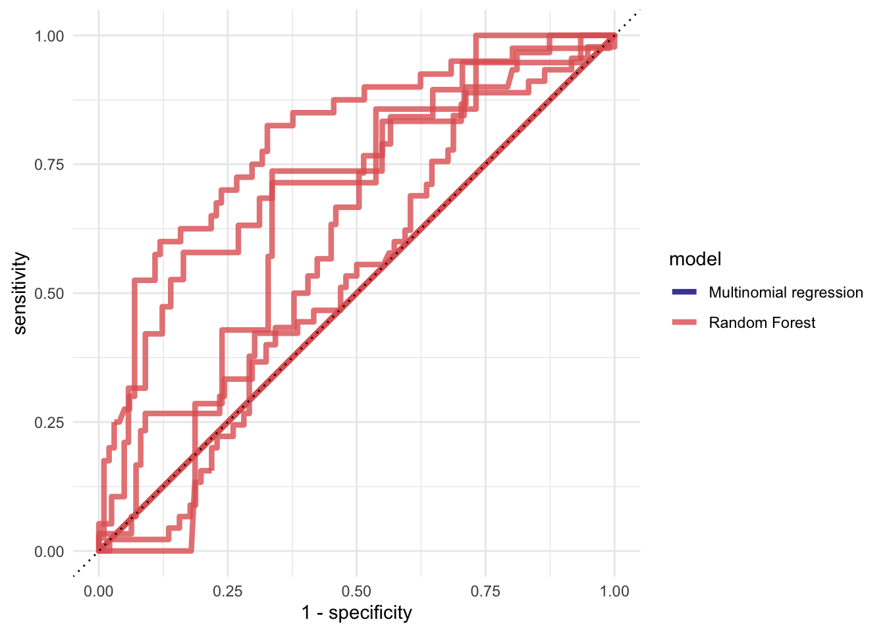
# Resampling results
# Manual resampling
# A tibble: 1 × 6
splits id .metrics .notes .predictions .workflow
<list> <chr> <list> <list> <list> <list>
1 <split [697/234]> train/test split <tibble> <tibble> <tibble> <workflow># A tibble: 2 × 4
.metric .estimator .estimate .config
<chr> <chr> <dbl> <chr>
1 accuracy multiclass 0.372 Preprocessor1_Model1
2 roc_auc hand_till 0.652 Preprocessor1_Model1variable importance scores
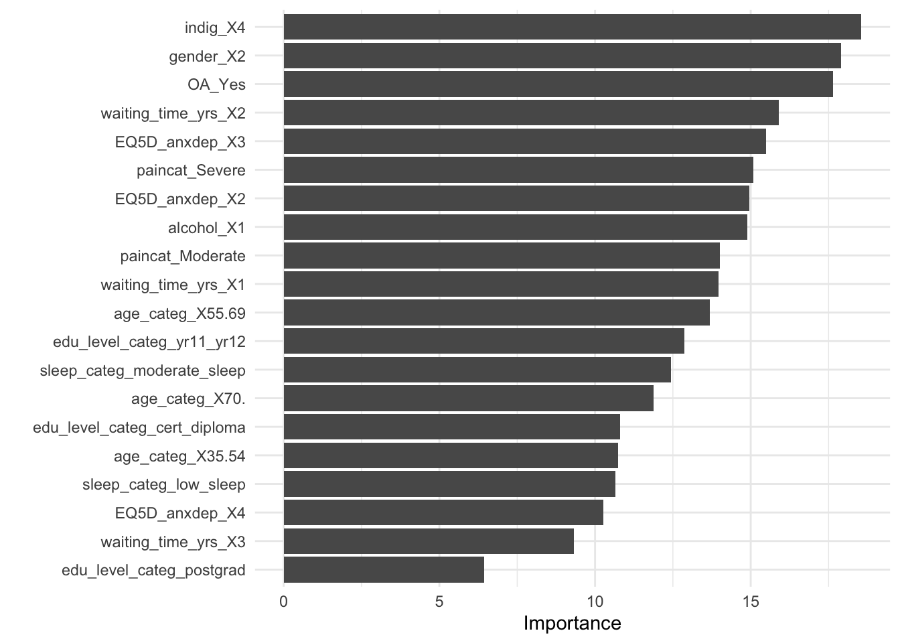
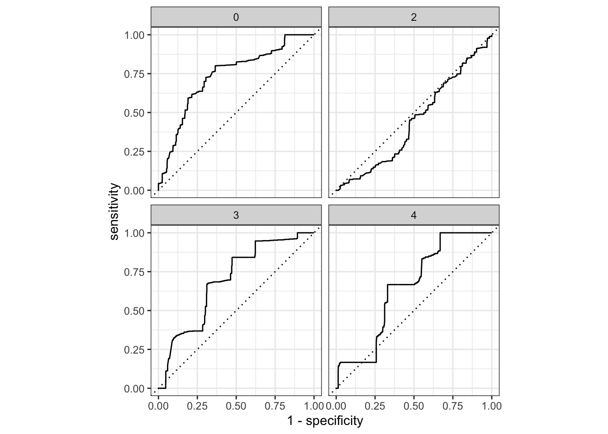